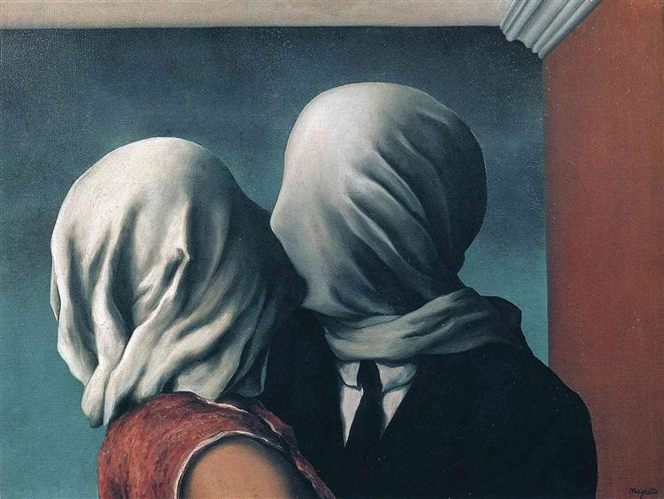
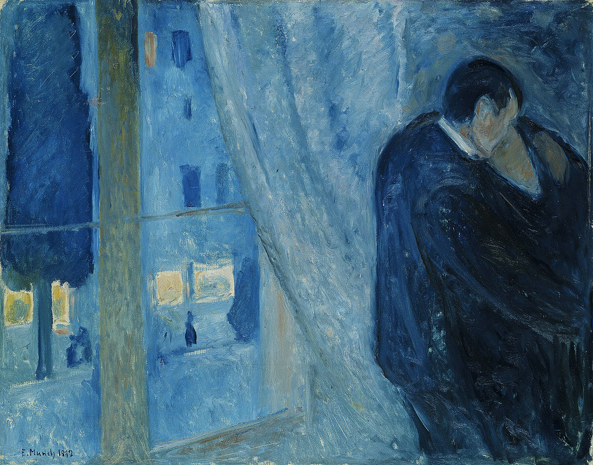
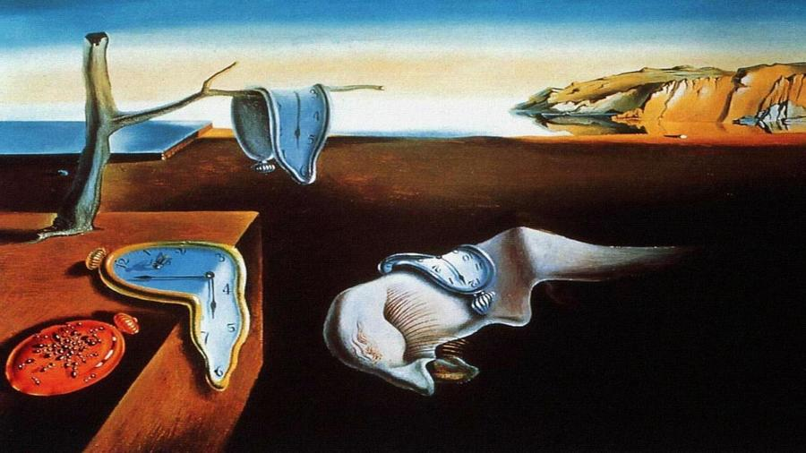

Top 5 quadri da vedere almeno una volta
Una lista dei più celebri e amati dipinti di tutti i tempi, da vedere almeno una volta nella vita.
1. Gli Amanti, René Magritte (1928)
Olio su tela, 54 x 73 cm, MoMa, New York
Il quadro raffigura due amanti che si baciano, con le teste coperte da un panno bianco che impedisce loro di vedersi e comunicare, suscitando una certa inquietudine e angoscia. La scena è poi completata da uno sfondo fortemente contrastato di tonalità blu e dalla cornice classicheggiante che riveste la rossa parete, riportando agli occhi i tempi antichi.
2. Notte Stellata, Vincent Van Gogh (1889)
Oleografia su tela, 74 x 92 cm, MoMa, New York
La Notte Stellata di Vincent Van Gogh è uno dei quadri più noti della tradizione pittorica occidentale e un vero e proprio testamento emozionale dell’artista olandese. Unendo sogno e realtà in una cornice soffusa, la notte ritratta nel 1889 da Van Gogh diventa specchio della propria anima e portale nel forte turbinio emotivo dell’artista mentre si avvicina tristemente alla fase più critica della sua vita

3. Il Bacio con la Finestra, Edvard Munch (1892)
Olio su tela, 73 x 92 cm, Galleria Nazionale di Oslo, Oslo
Le due figure abbracciate, impossibili da distinguere separatamente, rappresentano la perdita d'identità. Il rapporto tra uomo e donna si configura come tensione tra desiderio di amare e paura di amare. Il rapporto ambiguo è espresso dalla fusione fisica delle due figure che si abbracciano nel tentativo di annullarsi o assimilarsi. In ciò Munch trasferisce quel doloroso senso di solitudine legate al suo vissuto personale.
4. Composizione VIII, Vasilij Kandinskij (1923)
Olio su tela, 140 x 201 cm, Museo Guggenheim, New York
Una delle opere più celebri del padre russo dell'Astrattismo. L'opera rappresenta forme geometriche elementari (cerchi, triangoli, quadrati, linee...), disposte in maniera apparentemente casuale.Tuttavia, ogni linea di questo quadro ha un significato psicologico: le linee triangolari rappresentano tensione, quelle orizzontali rappresentano un sentimento di calma, quelle circolari rappresentano movimento, e così via.

5. La Persistenza della Memoria, Salvador Dalì (1931)
Olio su tela, 24 x 33 cm, MoMa, New York
Opera surrealista per antonomasia, La persistenza della memoria raffigura una landa deserta dominata dalla presenza di alcuni orologi molli, dalla consistenza quasi fluida, simboli dell'elasticità del tempo. Mostrandosi assai sensibile all'influsso di Sigmund Freud, Dalì con La persistenza della memoria riflette sulla relatività del tempo.
